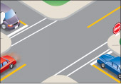
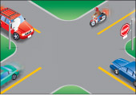
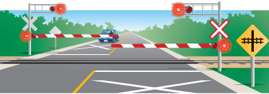
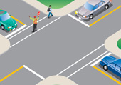
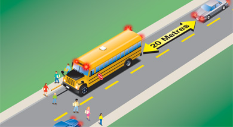
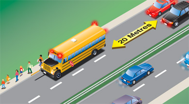

Knowing how to stop safely and properly is an important driving skill. Safe and responsible drivers see stops ahead, check their mirrors, begin braking early and stop smoothly. Braking is easier when you sit properly. Use your right foot for both brake and gas pedals so you won't step on both pedals at the same time or activate your brake lights unnecessarily. Press the brake pedal firmly and evenly.
In a vehicle with manual transmission, try shifting into a lower gear going down long, steep hills. This will help control your speed and you won't have to brake as sharply. Downshift before starting downhill since it may not be possible once you are going downhill. As a guide, you should be in the same gear going downhill as uphill.

Diagram 2-23
You must come to a complete stop for all stop signs and red traffic lights. Stop at the stop line if it is marked on the pavement (Diagram 2-23).

Diagram 2-24
If there is no stop line, stop at the crosswalk, marked or not. If there is no crosswalk, stop at the edge of the sidewalk. If there is no sidewalk, stop at the edge of the intersection (Diagram 2-24). Wait until the way is clear before entering the intersection.
Stopping at railway crossings
All railway crossings on public roads in Ontario are marked with large red and white “X” signs. Watch for these signs and be prepared to stop. You may also see yellow advance warning signs and large “X” pavement markings ahead of railway crossings. Some railway crossings have flashing signal lights and some use gates or barriers to keep drivers from crossing the tracks when a train is coming. Some less-travelled crossings have stop signs posted. Remember it can take up to two kilometres for a train to stop under full emergency braking. On private roads, railway crossings may not be marked, so watch carefully.

Diagram 2-25
When you come to a railway crossing, remember:
- Slow down, listen and look both ways to make sure the way is clear before crossing the tracks.
- If a train is coming, stop at least five metres from the nearest rail or gate. Do not cross the track until you are sure the train or trains have passed.
- Never race a train to a crossing.
- If there are signal lights, wait until they stop flashing and, if the crossing has a gate or barrier, wait until it rises before you cross the tracks.
- Never drive around, under or through a railway gate or barrier while it is down, being lowered or being raised. It is illegal and dangerous.
- Avoid stopping in the middle of railway tracks; for example, in heavy traffic, make sure you have enough room to cross the tracks completely before you begin.
- Avoid shifting gears while crossing tracks.
- If you get trapped on a crossing, immediately get everyone out and away from the vehicle. Move to a safe place and then contact authorities.
- Most buses and other public vehicles are required to stop at railway crossings that are not protected by gates, signal lights or a stop sign. School buses must stop at railway crossings whether or not they are protected by gates or signal lights. Watch for these buses and be prepared to stop behind them.
- If you are approaching a railway crossing with a stop sign, you must stop unless otherwise directed by a flagman.
Stopping at school crossings

Diagram 2-26
Where a school-crossing guard displays a red and white stop sign, you must stop before reaching the crossing and remain stopped until all people, including the school crossing guard, have cleared the entire roadway and it is safe to proceed. If you have any doubts about when it is safe to drive forward, wait until all the children and the guard have cleared the crossing. Drivers who don't follow the stopping requirements may receive a substantial fine and get three demerit points.
Stopping for school buses
School buses in Ontario come in a range of sizes. All are chrome yellow and display the words “School Bus.”
You must stop whenever you approach a stopped school bus with its upper alternating red lights flashing, regardless of whether you are behind the bus or approaching it from the front. When approaching the bus from the front, stop at a safe distance for children to get off the bus and cross the road in front of you. If you are coming from behind the bus, stop at least 20 metres away. Do not go until the bus moves or the lights have stopped flashing.

Diagram 2-27

Diagram 2-28
If you are on a road with a median strip, only vehicles coming from behind the bus must stop. (A median is a physical barrier such as a raised, lowered, earth or paved strip constructed to separate traffic travelling in different directions. Vehicles cannot cross over a median strip.)
You must obey the school bus law on any road, no matter how many lanes or what the speed limit. Be prepared to stop for a school bus at any time, not just within school hours.
As well as the upper alternating red flashing lights, school buses use a stop sign arm on the driver’s side of the bus. This arm, a standard stop sign with alternating flashing red lights at top and bottom, swings out after the upper alternating red lights begin to flash. Remain stopped until the arm folds away and all lights stop flashing.
Note: It is illegal to fail to stop for a stopped school bus that has its red lights flashing. If you don't stop, you can be fined heavily and get six demerit points for a first offence. In Ontario, school bus drivers and other witnesses can report vehicles that have illegally passed a school bus. If you are the vehicle’s registered owner, these fines, but not demerit points or jail time, may be applied to you.
Watch for school buses near railway crossings. All school buses must stop at all railway crossings. The upper alternating red lights are not used for these stops, so be alert.
Stopping for pedestrian crossovers

Diagram 2-29
Pedestrian crossovers (Diagram 2-29) are designated areas that allow pedestrians to safely cross roads where there are no traffic lights. Always watch for pedestrians and people using wheelchairs at these crossings.
Pedestrians may push a button to make the overhead yellow lights flash to warn drivers that they will be crossing. Pedestrians should point or make an indication to drivers that they want to cross before entering the roadway (try making eye contact when possible). Drivers including cyclists must yield the right-of-way to pedestrians in the crossover. Only when pedestrians and school crossing guards have crossed and are safely on the sidewalk can drivers and cyclists proceed. You must not pass any vehicle within 30 metres of a pedestrian crossover.
For more information on pedestrian crossovers visit Driving near pedestrian crossovers and school crossings.
Summary
By the end of this section, you should know:
- Where to position your vehicle when stopping at stop lights and stop signs
- The importance of stopping at railway crossings and how to position your vehicle to stop for them
- How and when to stop for school crossings and school buses
- How and when to stop for pedestrian crossovers